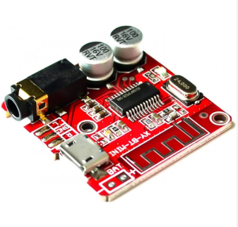
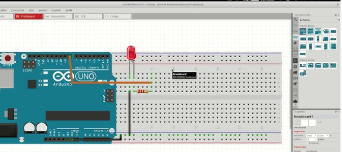
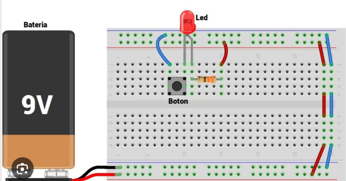
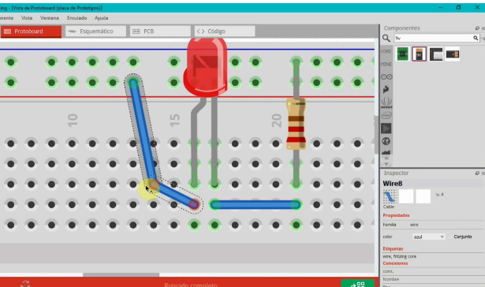
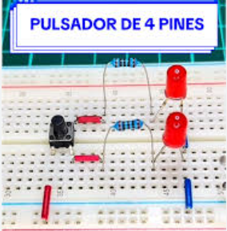
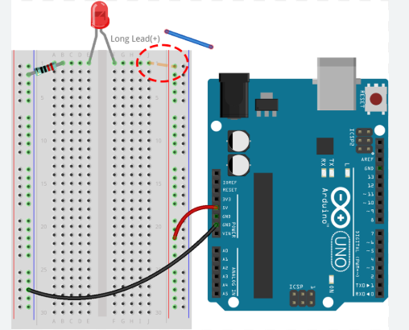
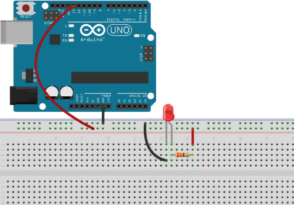

Actividad N°1-Plataforma Fritzing
Encendamos un LED con un botón usando Fritzing.
Paso N.º 1:
Haz clic en el siguiente enlace: https://fritzing.org/ para acceder a la herramienta de Fritzing. Una vez dentro, abre el programa y selecciona la vista "Protoboard" para comenzar a diseñar tu circuito.

Paso N.º 2:
Arrastra estos componentes desde la biblioteca:
- 1 LED
- 1 resistencia de 220 Ω
- 1 pulsador (Push Button)
- 1 batería de 9V
- Protoboard y cables de conexión.

Paso N.º 3:
Coloca el LED en la protoboard, asegurándote de que el pin largo (ánodo) quede hacia el lado positivo.

Paso N.º 4:
Conecta una resistencia de 220 Ω en serie con el LED.

Paso N.º 5:
Coloca el pulsador en la protoboard, asegurándote de que sus pines queden bien conectados en filas distintas.

Paso N.º 6:
Conecta un extremo del pulsador al lado positivo de la batería (con cable) y el otro extremo a la entrada del LED.

Paso N.º 7:
Conecta el terminal negativo de la batería al extremo de la resistencia para cerrar el circuito.

Paso N.º 8:
Cambia a la vista Esquemático para observar y verificar el circuito.